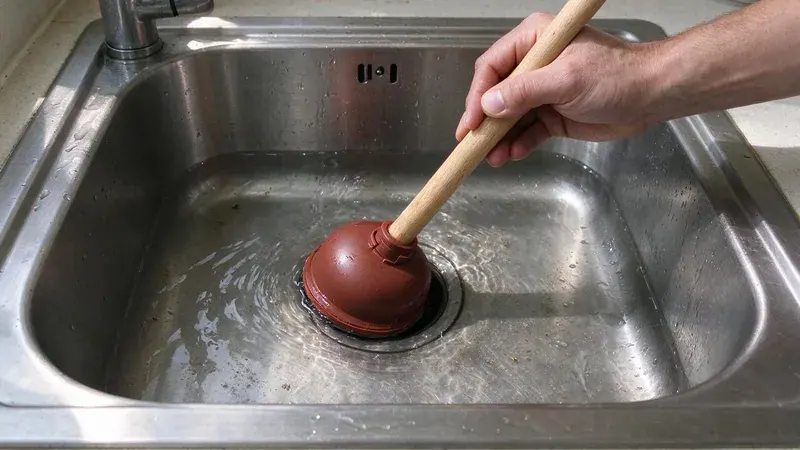

Why Kitchen Sinks Back Up
The kitchen drain takes more abuse than any other drain in the house. Grease and starch wash down warm, then cool and cling to the inside of the pipe. Over a year or two that coating narrows a 1-1/2 inch drain line down to roughly the width of your finger. Then one big rinse finds the limit.
The Usual Causes
Grease is the main one. Bacon fat and cooking oil both harden once they cool. Running hot water after pouring grease only pushes it a few feet further, where it sets up in the horizontal run behind the wall. Wipe pans with a paper towel first.
Garbage disposals grind food, but they do not make it disappear. Eggshells and coffee grounds sink into the trap and pack like sand. Fibrous stuff such as celery and corn husks wraps around the disposal blades or forms a thick mat down in the trap. Pasta and rice swell after they go down.
Private wells serve many rural homes, and iron, sulfur and hardness are common issues that call for filtration or softening.
Hard water leaves scale inside older galvanized and cast iron drains, and that rough surface catches grease faster than smooth PVC. A lot of homes built before the 1970s still have a galvanized drain arm behind the kitchen sink. Those pipes rust closed from the inside. Chemical cleaners will not keep them open for long.
Dishwasher and Disposal Connections
A sink that backs up when the dishwasher drains is a clue. A dishwasher dumps a few gallons quickly, so any partial clog downstream sends that water into the sink basin. A new disposal with the knockout plug still in place will do the same thing. Check that first after a disposal swap.
Keeping the Line Clear
Prevention here is cheap. Pour cooled grease into a can and throw it out when it sets. Use plenty of cold water with the disposal, and let it run about 15 seconds after the motor quiets down. A basket strainer catches the rest.
Once a month, flush the line. Fill both sink bowls with hot water, then pull the plugs at the same time. The sudden volume scours the trap and the drain arm behind the wall much better than a running faucet ever will. Skip boiling water if you have PVC drains, since repeated boiling water can soften the joints. Hot tap water is plenty.
Quick Fixes for a Minor Clog
Start with a cup plunger, not the flange type used on toilets. With a double bowl, block the second drain with a stopper or wet rag so the pressure goes toward the clog instead of out the other side. Ten or fifteen firm strokes is usually enough. Leave the dishwasher off until it drains.
Next, pull the trap. With a bucket underneath, hand-loosen the two slip nuts and clear the U-bend. Plenty of clogs sit right in that first foot of pipe. With a clean trap, the clog is further in the wall, which calls for a quarter-inch hand auger.
Skip chemical drain cleaners. They rarely clear grease clogs and they sit in the trap when they fail. Then whoever opens the pipe next is working in caustic water, and the chemical can eat at older metal drain pipe. Enzyme cleaners are fine for maintenance.
When to Bring in a Plumber
Water rising in another fixture changes things. A tub that gurgles or a floor drain that bubbles as the sink drains puts the blockage in the main line rather than the kitchen branch. Clearing it calls for a drain machine run through a cleanout, or a jetter if grease is heavy. Do not keep running water.
Our techs at HRL Plumbing clear kitchen lines all over Ohio, and most kitchen calls are done in about an hour. We will run a camera if the line clogs again within a few months. The office number is (740) 449-7505. Tell the dispatcher whether the dishwasher or the disposal was running when it backed up.
Need a licensed plumber in Ohio?
HRL Plumbing answers 24/7 and offers same-day service across Ohio.